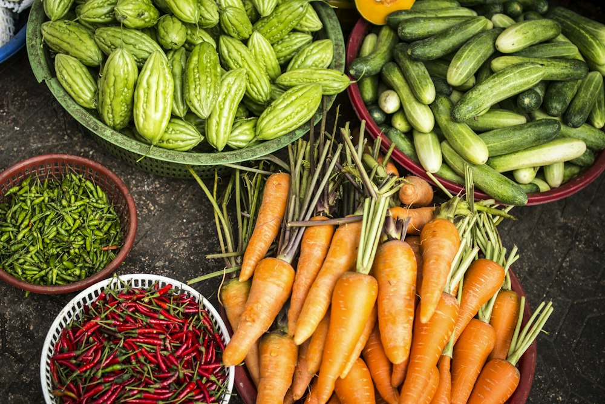
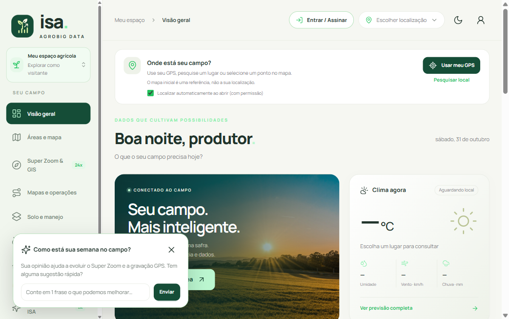
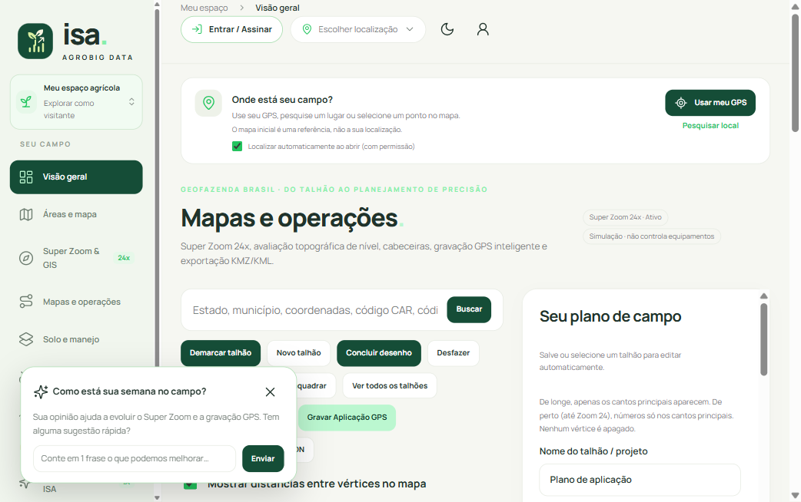

A ISA conecta ciência agronômica, sensoriamento remoto por satélite, modelos globais de solo e inteligência artificial para transformar cada hectare da sua terra em decisões mais rentáveis e sustentáveis.
Combinamos a força do trabalho no campo com a precisão do sensoriamento remoto de ponta a ponta.



A ISA consolida todas as frentes essenciais do seu negócio rural em uma interface limpa, rápida e sem poluição visual. Sem telas vazias ou cliques desnecessários.
Seus talhões, arquivos KML, laudos de solo e negociações ficam sincronizados no Supabase e na nuvem, protegidos pelo seu login Google ou e-mail.

Clique nas abas abaixo para visualizar as telas reais e as capacidades do ecossistema.
Demarcação precisa de talhões em Herval Seco (RS), Araguatins (TO) ou em qualquer coordenada do mundo. Conta com satélite ESRI em escala de metros, curvas de nível topográfico, cálculo automático de hectares e geração de cabeceiras e tiros de pulverização com exportação para KMZ.

Entenda por que a ISA é um ecossistema produtivo e não apenas um mock demonstrativo.
| Capacidade Agrícola | Projetos e Clones Genéricos | Plataforma Original ISA (AgroBig Data) |
|---|---|---|
| Localização & Coordenadas | ❌ Cidades fixas travadas em combobox (Palmas, Gurupi etc.) a dezenas de km da fazenda. | ✔️ GPS real do celular, busca por Latitude/Longitude livre (Herval Seco a Araguatins) e Google Maps. |
| Mapeamento de Talhões | ❌ Sem mapa interativo ou imagens estáticas sem ferramentas. | ✔️ Satélite Leaflet/ESRI, Super Zoom 24x, cálculo de hectares e exportação KMZ/KML. |
| Ciência do Solo | ❌ Totalmente ausente; não analisa textura ou fertilidade. | ✔️ Modelo global ISRIC SoilGrids com textura granulométrica em rodelas e química. |
| Inteligência Artificial (IA) | ❌ Textos fixos pré-programados com regras simples de if/else ("sem serviço de linguagem"). | ✔️ LLM Multimodal (Google Gemini) para chat técnico e diagnóstico de pragas por foto de folha. |
| Persistência & Contas | ❌ Dados somem ao fechar a aba ou limpar o cache do navegador. | ✔️ Login seguro por e-mail/Google, salvando seus talhões e histórico na nuvem permanentemente. |
 isa
isa